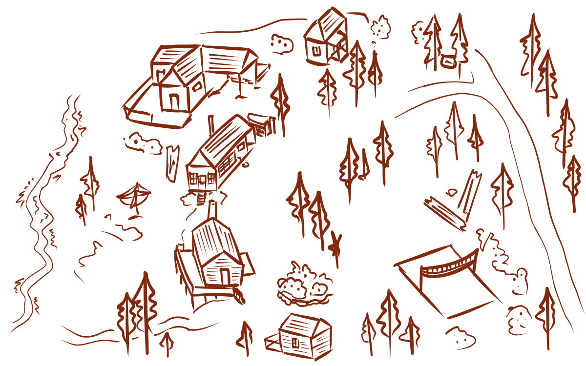
welcome to the cabins
click around, what
will you discover?

click around, what
will you discover?
I remember my first night attempting to sleep out in the tent. I was up at Kenjockety with one of my best friends. For some reason I really wanted to sleep out there. Close friends of the family had done so quite often and I was probably a little jealous, it seemed fun at the time. But my fear got the better of me. Being out there while it was dark was terrifying. I have always been a bit scared of the woods at night. There’s practically no light because of how dense the canopy can get and don’t get me started on the noises! We ended up back inside that night fortunately.
But I did actually sleep out there with my cousins eventually. The three of us in the tent was a much better experience and Carl even joined us one year. It was cold in the mornings but that was probably the best part. Waking up with the light and being able to trudge over to the dining cabin for breakfast. As an adult I feel a sense of need to get dressed for breakfast now, but long for the innocence of being able to be bundled up and comfortable in the warm dining cabin.
I am grateful though that I never have to sleep on the deck, especially with all the mosquitos. My dad, his siblings and many others have all told me how they grew up sleeping on either the deck of the main cabin or Mac’s cabin. I don’t envy them. Don’t get me wrong, it sounds fun but just not for me.
It’s been a long time since I slept out in the tent and probably an equal amount of time since it was last put up. The past few years have been a bit different, quieter in a way. I feel like all the family members who came up during the summer usually, no longer do. It’s strange. Something has shifted and I don’t know what. Maybe that is the part of getting older that no one tells you about. You become more aware of how things used to be and questioning why they changed.
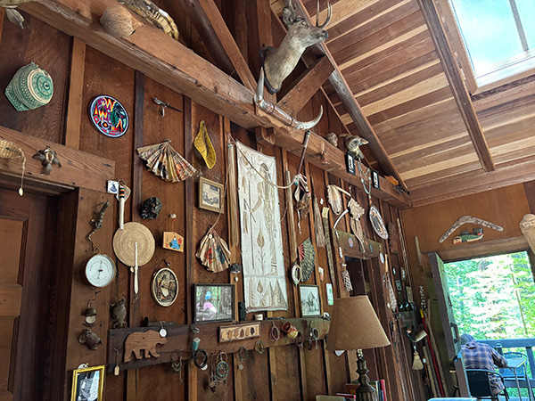
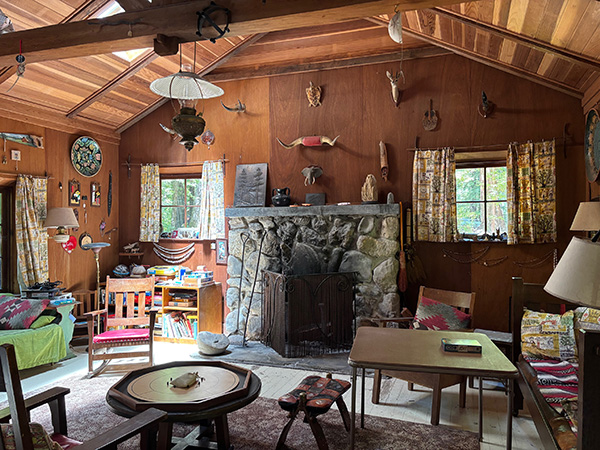
The Main cabin is likely the most iconic cabin, and the most unique. It’s full of everything! My family is surprisingly well traveled so there are souvenirs from every corner of the globe. Plus it is a hundred year’s worth of souvenirs. There everything from taxidermy, swords, hats, art, carvings to practically anything you could think of. It’s a bit like a museum.
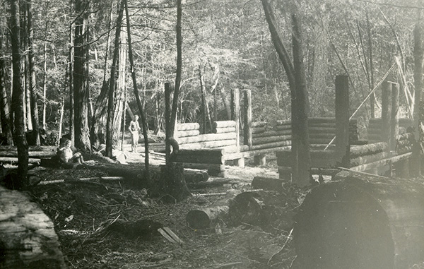
It’s also the only true log cabin on the property. The redwood trees were hauled in from several miles away and then pieced together. And it was entirely done by the family along with a couple friends made along the way. Two brothers by the last name of Erikson helped build this cabin. And it became the new hub of Kenjockety. There’s a large deck that overlooks the slope heading towards the creek. We often spend lunch out there, sitting, chatting and relaxing. Even though we are right across from the entrance to the state park, it feels like we are isolated because all you can see is the trees and the sky.
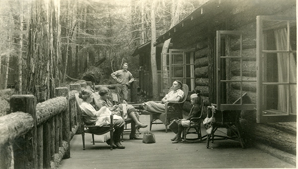
The interior, while also featuring so much memorabilia, is also filled with books, games and so many seats. Every night (that is suitable) a fire is started and we sit to wind down the night. I often read or get roped into a game. Occasionally, we roast s’mores and those are the best nights. It’s comforting being able to curl up in a chair surrounded by people you love.
Some staples of this cabin go far beyond the memories though, it’s the traditions that have been made. There’s a candy and chocolate dish that is always filled for whenever we need a sweet or potentially savory snack. Every year is a surprise for what will be stocked. And every year before we leave, we have to sign the guest book. This red-bound book is quite literally a written log of everyone who has been here before me. I can go back to when my dad was a kid and even to the very beginning.
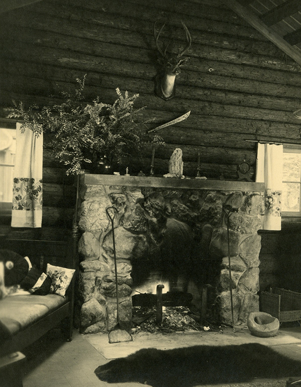
So many people have passed through this place. It’s special just how many guests beyond the family have had the opportunity to experience Kenjockety.
I look very fondly at this stump as an adult and marvel and how small it feels. As a child I would play in this with my cousins, Isabelle and Carl. We all crammed in there, covered in dirt and some soot from the charred sides among the moss. We decorated our little work spaces with nature’s collectibles: twigs, bark, stones and much more. I don’t know exactly when we stopped playing in it. The change must have been gradual, we grow up after all.
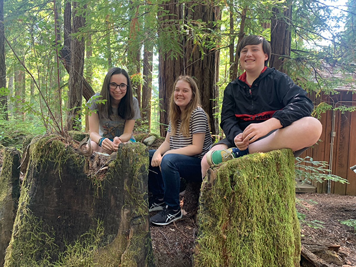
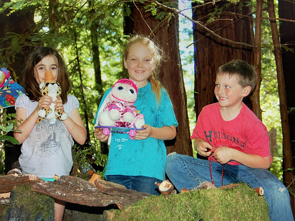
I don’t actually know if this stump is remnants of logging or a fire, or both! There have been many fires that have swept through the area in the past 200 years, whether natural or caused by the mills. There’s evidence on many of the trees of the 1890’s fire. One such tree has an interior that is like a little cave to crawl in. The tree is still thriving which is surprising, even with two holes.
Walking through part of the Tract, you can see many remnants of logged stumps and large ones too. Back in the mid to late 1800’s, the Page Saw Mill ran logging operations in this area. The remains of the mill are gone, but there is evidence in hidden areas of what happened long ago.
Redwood was a prized timber and there was the demand. Multiple companies set up mills, logged and then moved on, making their way through the forest. But as the forest grew smaller and the concern for preservation grew larger. Not too far south, the California Redwood Park (eventually Big Basin Redwoods State Park) became a reality in 1902.
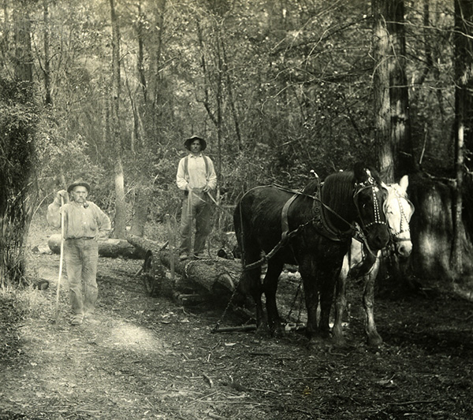
As the mill companies got no more use from the land they already logged, they began selling it. Bill Middleton, became one of many people interested in living in this remote new area and began collecting parcels between 1917 and 1922, which he started selling soon after.
They call the kitchen the heart of the home. I would say the dining cabin is the heart of Kenjockety. The kitchen is always too warm in the evenings and crowded, but it is where all the action happens. Dinner is often an ordeal, especially when you are serving large groups of the family.
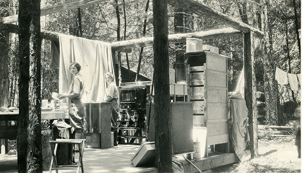
As a kid, there were some years where there would easily be fifteen of us up there and dinner would be done in shifts. The kids and then the adults. But when we were all there together, it was loud. There is no other experience like sitting in that cabin eating and talking while watching the forest get darker as the sun dips further between the trees and mountains.
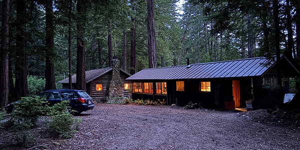
Every year is a different experience and it makes me wonder what the future will hold. Things have to be changed about this place, especially with its age. Only a few years ago the wood-burning stove that we often cook on had to be replaced. We have more small appliances that the outlets don’t have the correct amperage for. The large appliances need to be replaced eventually and so do the roofs. It still has its charm, but how long will it be before it is unrecognizable? How can a place filled with history and rustic charm keep up with modern methods? Or does it even need to change?
Other than actually being up at the cabins, the drive up is perhaps the most memorable part for me every year. As a child I would always look forward to making the trip with my dad. Those two hours were always so fun and the views were absolutely the best. Especially being on Skyline and being able to see the ocean on one side and the Bay on the other.
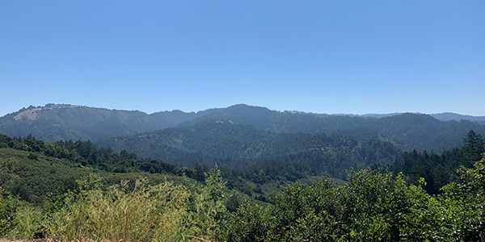
Once I started making the drive myself, I started noticing the details more. There is something special once you hit the woods as you climb the mountains, the smell. The air is cleaner and cooler. It’s another world in those hills. Quieter and calmer. Although the winding roads might be the only scary part, especially as it narrows along cliff edges.
Middleton Tract is small and remote. It’s just one turn off right before a state park. Largely unassuming, but there lies a wealth of history, especially for my family. I am traveling the same exact route we have gone for 100 years. I forget that often, the age of this place. Even though I am reminded by names on the sign of those who I have never met.
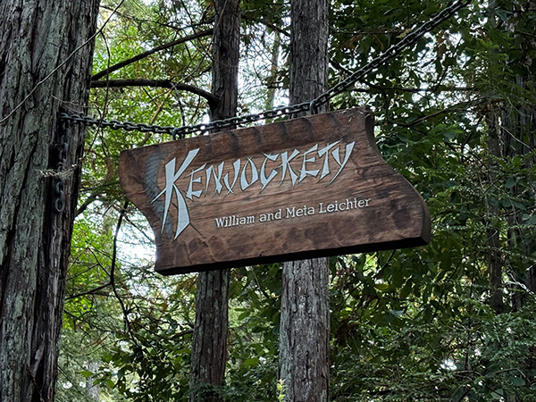
That is my greeting every summer while making the final turn. Turning down the dirt driveway and seeing the swing, then the cabins. It never gets old.
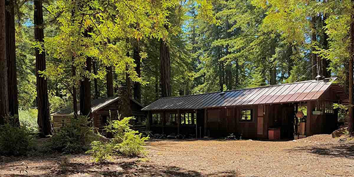
What we now call Mac’s cabin is the first cabin that ever was built, likely in 1924. Embarrassingly, I thought it was called Max’s cabins until very recently. I don’t know why I thought that but it is hard to connect fully with the names of people you have never met. Before it was christened with this name, the cabins housed other members of the family, the Watts. In the process of building that first cabins, tent cabins and other temporary structures were set up to house the multiple families. Eventually the Watts moved on from the area and another resident took up the space.
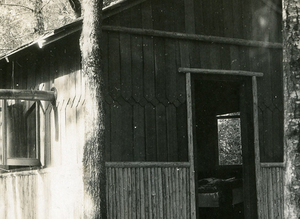
Jim McLachlan, or otherwise known as Mac, became a sort of caretaker for the property and stayed year-round. Eventually he left but the name stuck and has till this day. Names are important here and every cabin has one. There’s obviously Mac’s, the Dining cabin, the Main cabin, Bill and Susan’s cabin and the Honeymoon cabin. That last one is a little farther away from the rest.
But perhaps the most important bit is the actual name of the place, Kenjockety. A loose translation of this Indigenous name comes out to ‘away from the crowd.’ It’s well fitting. And it’s exactly why I like coming up here, it's quiet and more peaceful. I am able to turn off my connection to the outside world for a bit and just exist in nature. It is also the same exact reason why my ancestors bought this place in 1924.
Meta and William Leicter were looking for a summer residence to escape San Francisco. Through a close friend they heard of a Bill Middleton, who was selling parcels of land in a recovering second growth forest. They jumped at the opportunity and immediately got to work.
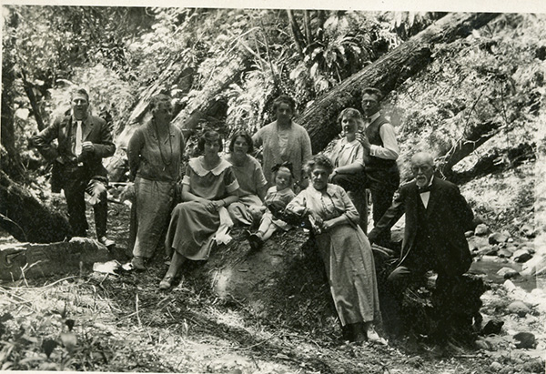
William is on the far left, then Meta, their two daughters, Mae (Edwards) and Paula Watt along with Paula’s little girl, Margaret. The rest are other members of the family and a couple friends all down at the creek. My dad carries the William Leichter name as his first and middle name. And I carry Mae’s name as a part of my first name along with my cousin Isabelle, except as a middle name. Technically I met my great grandmother as a baby, but still greatly mourn the loss of someone I wish I had gotten the chance to know.